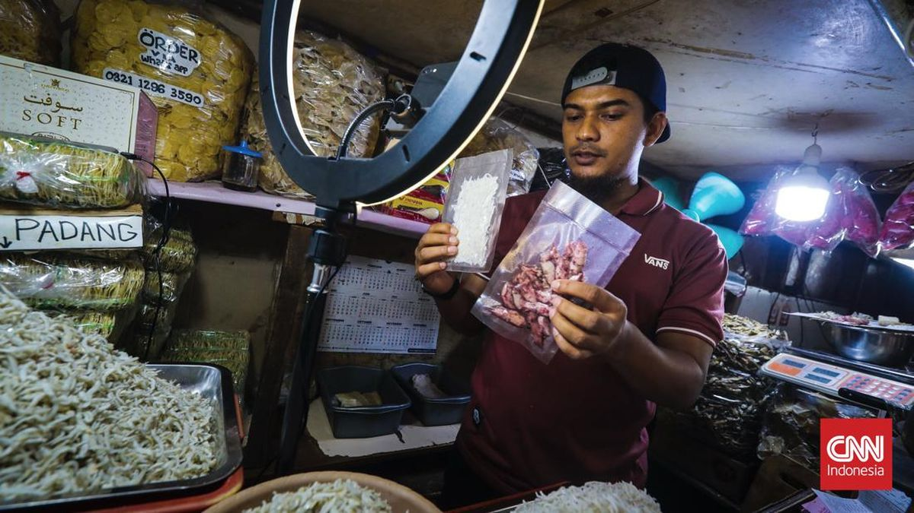
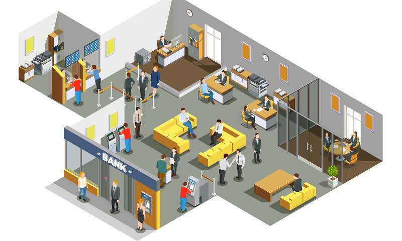

Bab 7: Perilaku Ekonomi dan Kesejahteraan
A. Pendahuluan: Ekonomi sebagai Perilaku Sosial

Letakkan file gambar dengan nama "gambar1.jpg" di folder "s1-bab-7"
Setiap manusia, sejak lahir hingga akhir hayatnya, selalu terlibat dalam kegiatan ekonomi — meskipun kadang ia tak menyadarinya. Ketika seseorang membeli nasi di warung, menanam padi di sawah, berdagang di pasar, menabung di bank, atau sekadar menukar barang dengan tetangga, ia sedang menjalankan perilaku ekonomi. Dengan kata lain, ekonomi bukan hanya tentang uang atau angka, tetapi tentang bagaimana manusia berupaya memenuhi kebutuhannya dengan sumber daya yang terbatas.
Manusia hidup dalam kondisi kelangkaan. Waktu, tenaga, dan sumber daya alam tidak pernah cukup untuk memenuhi semua keinginan. Karena itu, manusia harus memilih, dan setiap pilihan mengandung konsekuensi. Inilah inti dari perilaku ekonomi: membuat keputusan yang efisien dan bertanggung jawab dalam menghadapi kelangkaan. Namun, keputusan ekonomi tidak pernah berdiri sendiri. Ia selalu lahir dalam konteks sosial. Saat seorang petani memutuskan menanam padi atau jagung, keputusannya dipengaruhi oleh harga pasar, kebutuhan keluarga, dan kondisi cuaca. Ketika pemerintah membuat kebijakan subsidi, itu bukan sekadar soal angka dalam anggaran, tetapi juga soal kesejahteraan masyarakat. Maka, ekonomi sesungguhnya adalah ilmu tentang manusia dan hubungannya dengan manusia lain dalam memenuhi kebutuhan hidupnya.
Ekonomi mengajarkan keseimbangan antara kepentingan individu dan kepentingan bersama. Di satu sisi, setiap orang berhak memperjuangkan kesejahteraannya. Namun di sisi lain, perilaku ekonomi harus mempertimbangkan dampaknya terhadap masyarakat dan lingkungan. Konsumsi berlebihan, eksploitasi sumber daya, dan ketimpangan sosial adalah contoh nyata dari perilaku ekonomi yang tidak berkeadilan.
Dalam konteks Indonesia, semangat ekonomi tidak hanya dilihat dari sisi efisiensi, tetapi juga dari nilai-nilai gotong royong, keadilan sosial, dan kemandirian. Prinsip ini selaras dengan tujuan pembangunan berkelanjutan (Sustainable Development Goals/SDGs), yang menekankan keseimbangan antara pertumbuhan ekonomi, kesejahteraan manusia, dan kelestarian lingkungan.
Ekonomi bukan hanya alat untuk bertahan hidup, tetapi juga cermin dari karakter bangsa. Cara kita bekerja, berbelanja, menabung, hingga berbagi, mencerminkan nilai dan moral yang kita anut. Dalam masyarakat modern, tantangan ekonomi tidak hanya datang dari kekurangan sumber daya, tetapi juga dari keserakahan, ketimpangan, dan rendahnya literasi keuangan. Karena itu, pendidikan ekonomi tidak hanya menumbuhkan kemampuan berpikir rasional, tetapi juga kesadaran etis dan sosial agar manusia mampu mengelola sumber daya demi kesejahteraan bersama.
B. Kebutuhan, Kelangkaan, dan Pilihan Ekonomi
Manusia hidup dalam dunia yang serba terbatas, sementara keinginannya tidak pernah habis. Dari sinilah muncul persoalan dasar ekonomi: bagaimana memenuhi kebutuhan dengan sumber daya yang terbatas.
1. Kebutuhan Manusia
Kebutuhan adalah segala sesuatu yang harus dipenuhi agar manusia dapat hidup layak dan berkembang. Kebutuhan bersifat dinamis—berubah seiring waktu, tempat, dan tingkat pengetahuan. Secara umum, kebutuhan manusia dibagi menjadi tiga tingkatan:
- Kebutuhan primer: kebutuhan pokok untuk bertahan hidup, seperti makanan, pakaian, dan tempat tinggal.
- Kebutuhan sekunder: kebutuhan untuk kenyamanan dan efisiensi hidup, seperti alat transportasi, peralatan rumah tangga, dan pendidikan.
- Kebutuhan tersier: kebutuhan yang bersifat pelengkap atau prestise, seperti kendaraan mewah, liburan ke luar negeri, atau barang bermerek.
Setiap individu memiliki urutan kebutuhan yang berbeda tergantung kondisi ekonomi, budaya, dan lingkungan sosialnya. Misalnya, bagi nelayan, perahu adalah kebutuhan primer; bagi pegawai, kendaraan pribadi mungkin sekunder. Kebutuhan juga bisa dikelompokkan berdasarkan waktu (sekarang dan masa depan), sifatnya (jasmani dan rohani), atau subjeknya (individu dan kolektif). Kebutuhan rohani—seperti rasa aman, cinta, dan penghargaan—sering kali tak kalah penting dari kebutuhan fisik.
2. Kelangkaan dan Masalah Pokok Ekonomi
Kelangkaan (scarcity) terjadi ketika jumlah sumber daya tidak cukup untuk memenuhi semua kebutuhan manusia. Sumber daya itu bisa berupa alam (tanah, air, energi), manusia (tenaga kerja, keahlian), maupun modal (uang, alat produksi). Kelangkaan menuntut manusia membuat pilihan. Karena tidak semua kebutuhan bisa dipenuhi, manusia harus menentukan apa yang harus diproduksi, bagaimana memproduksi, dan untuk siapa hasilnya.
Contoh:
- Petani harus memilih apakah menanam padi atau jagung.
- Pemerintah harus memilih apakah membangun jembatan baru atau memperbaiki sekolah.
- Keluarga harus memilih antara menabung atau berlibur.
Setiap pilihan selalu memiliki biaya peluang (opportunity cost), yaitu nilai dari alternatif terbaik yang dikorbankan. Misalnya, ketika seseorang memilih menonton film alih-alih belajar, biaya peluangnya adalah waktu belajar yang hilang.

Letakkan file gambar dengan nama "gambar2.jpg" di folder "s1-bab-7"
3. Prinsip Ekonomi dalam Kehidupan Sehari-hari
Dalam menghadapi kelangkaan, manusia menggunakan prinsip ekonomi, yaitu upaya memperoleh hasil sebesar-besarnya dengan pengorbanan sekecil-kecilnya. Namun, prinsip ini tidak boleh disalahartikan sebagai keserakahan, melainkan sebagai efisiensi dan tanggung jawab dalam menggunakan sumber daya.
Contohnya:
- Menghemat listrik dan air untuk mengurangi biaya serta menjaga lingkungan.
- Memilih produk lokal agar ekonomi daerah berkembang.
- Mengatur anggaran keluarga agar kebutuhan pokok tetap terpenuhi.
Dengan berpikir ekonomi secara cerdas, manusia belajar membuat keputusan yang rasional dan beretika—menimbang manfaat jangka panjang, bukan sekadar keuntungan sesaat.
4. Nilai Sosial dalam Pilihan Ekonomi
Setiap keputusan ekonomi membawa dampak sosial. Ketika seseorang membeli produk dari usaha kecil di lingkungannya, ia ikut membantu menggerakkan ekonomi lokal. Ketika masyarakat memilih gaya hidup konsumtif, dampaknya bisa berupa peningkatan sampah dan eksploitasi sumber daya. Maka, pilihan ekonomi adalah juga pilihan moral. Ekonomi yang adil dan berkelanjutan hanya mungkin terwujud jika manusia berpikir bukan hanya "berapa banyak yang saya dapatkan," tetapi juga "seberapa besar manfaatnya bagi orang lain dan lingkungan."
C. Permintaan, Penawaran, dan Harga Pasar
Kegiatan ekonomi tidak terjadi dalam ruang hampa. Di setiap pasar—baik pasar tradisional yang riuh maupun pasar digital yang senyap—selalu ada dua kekuatan utama yang saling bertemu: permintaan dan penawaran. Dari pertemuan keduanya lahirlah harga, yang menjadi penyeimbang antara keinginan konsumen dan kemampuan produsen.
1. Permintaan (Demand)
Permintaan adalah jumlah barang atau jasa yang ingin dan mampu dibeli konsumen pada berbagai tingkat harga dalam waktu tertentu. Ada dua syarat agar permintaan benar-benar terjadi: keinginan dan kemampuan membayar. Permintaan dipengaruhi oleh beberapa faktor:
- Harga barang itu sendiri. Semakin tinggi harga, biasanya semakin rendah jumlah yang diminta (dan sebaliknya).
- Pendapatan konsumen. Semakin besar pendapatan, semakin tinggi kemampuan membeli barang.
- Selera dan kebiasaan. Tren, budaya, dan gaya hidup sangat memengaruhi permintaan.
- Harga barang lain. Barang substitusi (pengganti) dan komplementer (pelengkap) saling memengaruhi.
- Harapan masa depan. Jika masyarakat memperkirakan harga akan naik, permintaan bisa meningkat lebih awal.
Hukum permintaan menyatakan: "Jika harga naik, maka jumlah barang yang diminta akan turun; jika harga turun, jumlah barang yang diminta naik." Namun, hukum ini berlaku ceteris paribus—artinya "dengan asumsi faktor lain tetap." Dalam kenyataannya, faktor sosial, psikologis, dan budaya sering membuat perilaku konsumen tidak sepenuhnya rasional.
2. Penawaran (Supply)
Penawaran adalah jumlah barang atau jasa yang ingin dan mampu dijual produsen pada berbagai tingkat harga dalam waktu tertentu. Hukum penawaran berbunyi kebalikan dari hukum permintaan: "Jika harga naik, maka jumlah barang yang ditawarkan akan meningkat; jika harga turun, penawaran menurun."
Faktor-faktor yang memengaruhi penawaran antara lain:
- Biaya produksi. Jika biaya bahan baku atau tenaga kerja meningkat, produsen cenderung mengurangi penawaran.
- Teknologi. Inovasi dapat menekan biaya produksi dan meningkatkan jumlah barang yang ditawarkan.
- Tujuan perusahaan. Perusahaan yang berorientasi pada laba akan lebih responsif terhadap perubahan harga.
- Harapan masa depan dan kebijakan pemerintah.
Produsen adalah pemain rasional—mereka berusaha mencari keuntungan dengan menyesuaikan produksi terhadap perubahan harga dan biaya.
3. Keseimbangan Pasar (Market Equilibrium)
Pasar mencapai keseimbangan ketika jumlah barang yang diminta sama dengan jumlah yang ditawarkan. Titik ini disebut harga keseimbangan (equilibrium price). Jika harga di pasar terlalu tinggi, maka barang menumpuk karena penawaran melebihi permintaan (surplus). Sebaliknya, jika harga terlalu rendah, barang menjadi langka karena permintaan melebihi penawaran (defisit). Maka, harga pasar berperan sebagai penyeimbang alami antara kepentingan konsumen dan produsen. Namun dalam kenyataan, pasar tidak selalu bekerja secara ideal. Campur tangan pemerintah sering dibutuhkan untuk menjaga stabilitas harga—seperti melalui subsidi, pajak, atau pengawasan distribusi. Tujuannya bukan mengubah hukum pasar, tetapi memastikan agar keadilan sosial tetap terjaga.

Letakkan file gambar dengan nama "gambar3.jpg" di folder "s1-bab-7"
4. Dinamika Pasar Modern
Di era digital, pola permintaan dan penawaran berubah cepat. Pasar tidak lagi terbatas pada ruang fisik, tetapi juga dunia daring—e-commerce, aplikasi jual beli, hingga pasar kripto. Informasi harga kini tersebar luas, dan konsumen menjadi lebih cerdas karena mudah membandingkan kualitas serta harga barang. Meski begitu, prinsip dasarnya tetap sama: keseimbangan antara kebutuhan manusia dan kemampuan memproduksi barang. Teknologi hanya mengubah cara manusia berdagang, bukan hakikatnya.
D. Bentuk-bentuk Pasar dan Peran Lembaga Keuangan
Pasar tidak hanya satu bentuk. Ia seperti organisme sosial yang menyesuaikan diri dengan kondisi masyarakatnya. Ada pasar yang bebas, di mana harga ditentukan oleh interaksi alami antara penjual dan pembeli; ada pula pasar yang dikendalikan oleh pemerintah atau satu pihak dominan. Memahami bentuk pasar berarti memahami bagaimana kekuasaan dan keadilan bergerak dalam dunia ekonomi.
1. Bentuk-bentuk Pasar
Secara umum, pasar dapat dibedakan menjadi dua kategori besar: pasar persaingan sempurna dan pasar tidak sempurna.
a. Pasar Persaingan Sempurna
Pasar ini idealnya terdiri atas banyak penjual dan pembeli sehingga tidak ada pihak yang mampu mengendalikan harga. Barang yang diperjualbelikan bersifat homogen (seragam), dan informasi pasar mudah diakses oleh semua pihak. Contoh: pasar hasil pertanian, seperti beras atau cabai di tingkat petani. Kelebihan: efisiensi tinggi dan harga cenderung stabil. Kelemahan: sering kali tidak realistis di dunia nyata, karena kekuasaan ekonomi jarang tersebar merata.
b. Pasar Persaingan Tidak Sempurna
Pasar ini muncul ketika satu atau beberapa pihak memiliki kekuatan untuk memengaruhi harga atau jumlah barang. Bentuk-bentuknya antara lain:
- Monopoli: hanya ada satu penjual yang menguasai pasar. Contoh: perusahaan listrik negara.
- Oligopoli: hanya ada beberapa produsen besar yang menguasai sebagian besar pasar. Contoh: industri otomotif atau telekomunikasi.
- Monopolistik: banyak penjual menawarkan produk sejenis dengan diferensiasi, misalnya merek-merek kopi atau pakaian.
- Monopsoni: hanya ada satu pembeli besar, seperti pabrik besar yang menjadi satu-satunya pembeli hasil pertanian di suatu daerah.
Pasar tidak sempurna mencerminkan kenyataan ekonomi modern, di mana kekuatan modal dan teknologi sering terkonsentrasi pada segelintir pihak. Karena itu, regulasi dan etika bisnis menjadi penting agar pasar tetap adil dan tidak merugikan masyarakat kecil.
2. Peran Lembaga Keuangan
Lembaga keuangan adalah jantung dari sistem ekonomi modern. Mereka menjadi perantara antara pihak yang memiliki kelebihan dana dengan pihak yang membutuhkan dana. Tanpa lembaga keuangan, roda ekonomi akan berjalan lambat, karena kegiatan produksi dan konsumsi sulit dibiayai.
a. Bank
Bank berfungsi menghimpun dana dari masyarakat dalam bentuk simpanan dan menyalurkannya kembali dalam bentuk kredit. Bank juga menjadi alat transmisi kebijakan moneter pemerintah, seperti pengaturan suku bunga dan pengendalian inflasi. Jenis bank antara lain:
- Bank Sentral: mengatur kebijakan moneter nasional (contoh: Bank Indonesia).
- Bank Umum: melayani kegiatan simpan pinjam, pembayaran, dan investasi.
- Bank Syariah: beroperasi dengan prinsip bagi hasil, bukan bunga.
b. Koperasi
Koperasi adalah lembaga keuangan yang dimiliki dan dikelola bersama oleh para anggotanya. Tujuannya bukan semata mencari laba, tetapi meningkatkan kesejahteraan bersama. Semangat gotong royong dan keadilan menjadi prinsip utama koperasi — sejalan dengan nilai-nilai sosial-ekonomi bangsa Indonesia.
c. Pasar Modal dan Lembaga Investasi
Pasar modal menjadi tempat bertemunya investor dan perusahaan yang membutuhkan dana untuk ekspansi. Melalui saham, obligasi, dan instrumen lainnya, pasar modal mendorong pertumbuhan ekonomi dengan membuka akses pembiayaan yang lebih luas. Namun, ia juga menuntut literasi keuangan dan regulasi yang kuat agar tidak menjadi ajang spekulasi yang merusak stabilitas ekonomi.

Letakkan file gambar dengan nama "gambar4.jpg" di folder "s1-bab-7"
3. Fungsi Sosial Lembaga Keuangan
Selain fungsi ekonomi, lembaga keuangan memiliki fungsi sosial: mendorong pemerataan kesejahteraan dan pembangunan yang inklusif. Ketika lembaga keuangan menyediakan akses kredit mikro untuk petani, nelayan, atau pelaku UMKM, mereka sesungguhnya sedang memperkuat fondasi ekonomi rakyat. Maka, keberadaan lembaga keuangan yang sehat, transparan, dan berkeadilan adalah syarat bagi terciptanya ekonomi yang berkelanjutan dan manusiawi.
E. Uang: Nilai, Fungsi, dan Transformasi dari Konvensional ke Digital
Uang adalah salah satu ciptaan sosial paling cerdik yang pernah dihasilkan manusia. Uang memampukan seseorang menukar hasil kerja dengan barang yang mungkin tidak pernah ia produksi sendiri. Dengan uang, ekonomi tidak lagi bergantung pada barter yang sering merepotkan (bayangkan menukar kambing dengan buku pelajaran—tidak efisien, dan sulit mencari penjual yang butuh kambing saat itu juga). Namun uang hanya bisa bekerja karena kepercayaan. Secarik kertas bernilai Rp100.000 tidak memiliki kegunaan fisik yang hebat—tidak bisa menghangatkan tubuh, tidak bisa mengenyangkan perut—namun kita sepakat bahwa ia bernilai, dan kesepakatan itu yang membuatnya berfungsi.
1. Nilai Uang
Nilai uang ditentukan oleh dua hal:
- Nilai intrinsik: nilai bahan fisiknya (seperti emas, perak di masa lampau).
- Nilai ekstrinsik: nilai yang diberikan oleh pemerintah dan diterima masyarakat sebagai alat pembayaran yang sah.
Di era modern, hampir seluruh uang memiliki nilai ekstrinsik. Nilainya bertahan selama masyarakat percaya terhadap stabilitas ekonomi negara yang menerbitkannya. Kepercayaan → stabilitas nilai uang → stabilitas ekonomi. Jika kepercayaan luntur, lahirlah inflasi, bahkan krisis.
2. Fungsi Uang
Uang memiliki fungsi seperti alat serbaguna dalam masyarakat, di antaranya:
- Alat tukar — mempermudah transaksi barang dan jasa.
- Satuan hitung — menentukan harga dan membandingkan nilai barang.
- Penyimpan nilai — bisa ditabung untuk kebutuhan masa depan.
- Alat pembayaran — melunasi utang, pajak, maupun tagihan.
- Alat pemindah kekayaan — memudahkan warisan, transfer, atau modal usaha.
Jika fungsi-fungsi tersebut terganggu, kegiatan ekonomi langsung melemah. Karena itu, menjaga kepercayaan terhadap uang adalah tugas seluruh elemen ekonomi: individu, lembaga keuangan, dan pemerintah.

Letakkan file gambar dengan nama "gambar5.jpg" di folder "s1-bab-7"
3. Transformasi Uang: Dari Konvensional ke Digital
Dunia terus bergerak menuju interaksi yang lebih cepat dan terhubung. Uang tidak mau ketinggalan.
a. Uang Konvensional
Berupa logam dan kertas. Memerlukan peredaran fisik, rentan rusak, dan membutuhkan biaya distribusi.
b. Uang Digital & Elektronik
Kini uang dapat berpindah tanpa harus berpindah fisiknya. Contohnya:
- E-money (kartu pembayaran, dompet digital)
- Mobile banking
- QRIS (transaksi antarplatform)
- Cryptocurrency (Bitcoin dkk., namun ini memerlukan pemahaman risiko dan regulasi yang ketat)
Uang digital mempercepat aliran ekonomi, memperluas inklusi keuangan, dan memudahkan masyarakat yang sebelumnya sulit mengakses layanan bank. Namun, ada risiko baru: kejahatan siber, pencurian data, hingga ketergantungan teknologi. Perjalanan uang seolah mencerminkan evolusi peradaban: dari batu-batu besar di pulau Yap, ke emas dan perak, ke kertas, lalu ke deretan kode enkripsi yang berkelana cepat melalui jaringan internet global.
4. Etika dan Akses dalam Penggunaan Uang Modern
Perubahan bentuk uang harus dibarengi kecakapan literasi keuangan. Masyarakat yang tidak siap berisiko terjebak pada:
- konsumsi impulsif,
- utang digital berbunga tinggi,
- penipuan keuangan.
Maka, pendidikan ekonomi bukan hanya mengajarkan "cara memakai uang," tetapi juga cara agar uang tidak memerintah hidup kita. Keadilan akses pun harus dijaga. Masyarakat pedesaan, pelaku UMKM kecil, dan kelompok rentan membutuhkan pendampingan agar tidak tertinggal dalam transformasi ekonomi digital.
F. Pengelolaan Keuangan Rumah Tangga, Perusahaan, dan Negara
Setiap level kehidupan manusia — dari keluarga kecil hingga pemerintahan besar — diikat oleh satu persoalan yang sama: bagaimana mengelola sumber daya terbatas untuk memenuhi kebutuhan yang tak terbatas. Pengelolaan keuangan adalah seni dan ilmu menyeimbangkan antara pendapatan, pengeluaran, dan tujuan hidup bersama.
1. Keuangan Rumah Tangga
Keluarga adalah unit ekonomi terkecil sekaligus fondasi sistem ekonomi nasional. Di sinilah anak-anak belajar arti bekerja, menabung, dan berbagi.
a. Sumber Pendapatan Rumah Tangga
Pendapatan keluarga bisa berasal dari gaji, hasil usaha, investasi, atau kiriman anggota keluarga lain. Prinsip dasarnya: pendapatan harus lebih besar dari pengeluaran, dan sebagian disisihkan untuk masa depan.
b. Pengeluaran Rumah Tangga
Pengeluaran meliputi kebutuhan pokok (makan, tempat tinggal, pendidikan, kesehatan), kebutuhan tambahan, serta tabungan dan sedekah. Manajemen keuangan yang baik memerlukan prioritas, catatan, dan disiplin.
c. Literasi Keuangan dan Kebiasaan Menabung
Literasi keuangan berarti kemampuan memahami cara menggunakan uang secara bijak — termasuk mengenal risiko pinjaman online, investasi bodong, atau pengeluaran konsumtif. Keluarga dengan perencanaan keuangan yang sehat akan lebih tangguh menghadapi krisis ekonomi.
2. Keuangan Perusahaan
Perusahaan adalah mesin produksi kesejahteraan. Namun, seperti halnya keluarga, perusahaan juga harus menyeimbangkan antara modal, pendapatan, dan pengeluaran.
a. Sumber Pendapatan dan Pengeluaran
Pendapatan perusahaan berasal dari penjualan barang atau jasa, sedangkan pengeluarannya mencakup biaya bahan baku, gaji karyawan, pajak, serta investasi pengembangan usaha. Tujuannya bukan hanya mencari laba, tetapi juga menciptakan lapangan kerja dan berkontribusi pada masyarakat.
b. Akuntabilitas dan Etika Bisnis
Laporan keuangan bukan sekadar angka; ia adalah bentuk tanggung jawab sosial. Perusahaan yang menipu laporan keuangannya merusak kepercayaan publik dan tatanan ekonomi. Etika bisnis menjadi fondasi agar pertumbuhan ekonomi berjalan adil dan berkelanjutan.
3. Keuangan Negara
Negara berperan seperti kepala rumah tangga raksasa yang mengatur uang rakyat untuk kesejahteraan bersama. Sumber pendapatannya berasal dari pajak, retribusi, sumber daya alam, serta pinjaman luar negeri. Pengeluarannya meliputi gaji pegawai, pembangunan infrastruktur, pendidikan, kesehatan, dan bantuan sosial.
a. Anggaran Pendapatan dan Belanja Negara (APBN)
APBN adalah cermin prioritas moral dan politik bangsa. Jika anggaran lebih banyak untuk pendidikan dan kesehatan, maka negara sedang berinvestasi pada manusia. Jika lebih berat pada hutang dan belanja konsumtif, itu tanda ketidakseimbangan yang perlu dikoreksi.
b. Transparansi dan Akuntabilitas Publik
Pengelolaan keuangan negara harus transparan karena uang itu milik rakyat. Korupsi adalah bentuk pengkhianatan ekonomi — ia memotong aliran kesejahteraan dari masyarakat menuju segelintir orang.
4. Keseimbangan Antara Ekonomi Mikro dan Makro
Rumah tangga dan perusahaan berada di ranah ekonomi mikro, sedangkan negara mengatur ekonomi makro. Keduanya saling bergantung: ketika keluarga banyak menabung, investasi meningkat; ketika perusahaan berkembang, penerimaan pajak negara naik; ketika negara stabil, harga dan lapangan kerja terjaga. Maka, kesejahteraan tidak lahir dari satu sisi saja. Ia adalah simfoni koordinasi antara individu, dunia usaha, dan pemerintah.
G. Inflasi, Stabilitas Ekonomi, dan Peran Kebijakan Publik
Ekonomi yang sehat ibarat tubuh manusia yang memiliki suhu stabil. Jika terlalu panas — inflasi tinggi — daya beli melemah. Jika terlalu dingin — deflasi — kegiatan ekonomi melambat. Maka tugas negara adalah menjaga suhu itu tetap seimbang: cukup hangat untuk tumbuh, tapi tidak sampai membakar.
1. Pengertian Inflasi
Inflasi adalah kenaikan harga barang dan jasa secara umum dan terus-menerus dalam jangka waktu tertentu. Jika harga naik hanya pada satu barang, misalnya cabai karena gagal panen, itu belum disebut inflasi. Namun jika kenaikan terjadi di berbagai sektor — bahan makanan, transportasi, perumahan — barulah inflasi nyata.
Dampaknya:
- Daya beli masyarakat turun.
- Nilai uang menurun: Rp10.000 hari ini tak sekuat Rp10.000 tahun lalu.
- Biaya hidup meningkat, terutama bagi masyarakat berpendapatan tetap.
Namun inflasi tidak selalu buruk. Dalam batas wajar (2–4% per tahun), ia justru menandakan ekonomi tumbuh karena permintaan meningkat. Masalah muncul ketika inflasi melonjak tanpa kendali — itulah hiperinflasi.
Contoh ekstrem: Hiperinflasi di Jerman tahun 1923 membuat uang kertas menjadi tidak berharga; orang membawa uang sekarung hanya untuk membeli roti. Di sisi lain, Jepang dan Swiss berusaha menjaga inflasi tetap rendah agar ekonomi stabil.
2. Penyebab Inflasi
Inflasi dapat disebabkan oleh dua hal utama:
a. Demand-pull inflation (tarikan permintaan):
Terjadi saat permintaan barang dan jasa meningkat, sementara pasokannya terbatas. Misalnya, lonjakan permintaan menjelang hari raya.
b. Cost-push inflation (dorongan biaya):
Terjadi karena biaya produksi naik — harga bahan bakar, gaji buruh, atau bahan baku meningkat — sehingga produsen menaikkan harga jual.
Selain itu, inflasi juga bisa dipicu oleh faktor moneter, seperti peredaran uang yang terlalu banyak akibat kebijakan bank sentral yang longgar.
3. Cara Mengukur Inflasi
Badan Pusat Statistik (BPS) mengukur inflasi menggunakan Indeks Harga Konsumen (IHK) — rata-rata perubahan harga dari sekumpulan barang dan jasa yang dikonsumsi rumah tangga: makanan, transportasi, pendidikan, perumahan, dan sebagainya. Jika IHK naik, berarti harga rata-rata meningkat.
4. Dampak Inflasi terhadap Kehidupan Sosial dan Ekonomi
Inflasi tidak hanya mengubah angka di pasar, tetapi juga perilaku manusia:
- Masyarakat cenderung menimbun barang karena takut harga terus naik.
- Penabung dirugikan, sebab nilai uang mereka menyusut.
- Peminjam diuntungkan, karena utangnya tergerus nilai.
- Kesenjangan sosial meningkat, sebab yang punya aset bisa melindungi diri dari inflasi, sedangkan yang hidup dari gaji tetap menanggung beban.
Inflasi juga bisa memicu ketegangan sosial dan politik, terutama jika harga kebutuhan pokok melonjak tajam. Karena itu, mengendalikan inflasi adalah bentuk perlindungan sosial paling dasar.
5. Peran Pemerintah dan Bank Sentral
Stabilitas ekonomi bergantung pada dua kekuatan: kebijakan fiskal (pemerintah) dan kebijakan moneter (bank sentral).
a. Kebijakan Fiskal (Pemerintah):
- Mengatur pengeluaran dan penerimaan negara.
- Menaikkan pajak atau mengurangi belanja negara saat inflasi tinggi.
- Memberi subsidi atau stimulus ketika ekonomi lesu.
b. Kebijakan Moneter (Bank Indonesia):
- Mengatur jumlah uang beredar.
- Menaikkan suku bunga untuk menekan inflasi.
- Menurunkan suku bunga untuk mendorong investasi.
- Menjaga stabilitas nilai tukar rupiah.
Kolaborasi keduanya menentukan arah perekonomian nasional: apakah rakyat hidup dalam kestabilan, atau justru bergulat dengan ketidakpastian harga.
6. Strategi Menghadapi Inflasi dalam Kehidupan Sehari-hari
Warga juga berperan menjaga keseimbangan ekonomi dengan:
- Belanja sesuai kebutuhan, bukan keinginan.
- Menabung atau berinvestasi dalam aset produktif (misalnya emas atau reksa dana).
- Meningkatkan keterampilan agar pendapatan tumbuh lebih cepat dari inflasi.
Ekonomi makro tidak hanya ditentukan oleh angka-angka kebijakan, tapi juga oleh kebijaksanaan mikro: cara kita mengelola uang di dompet sendiri.
H. Peran Lembaga Keuangan dan Transformasi Uang Konvensional ke Digital
Lembaga keuangan adalah sistem saraf ekonomi. Melalui mereka, uang mengalir dari yang memiliki ke yang membutuhkan — dari penabung ke pengusaha, dari pemerintah ke masyarakat, dan sebaliknya. Tanpa lembaga keuangan, ekonomi ibarat tubuh tanpa sirkulasi darah.

Letakkan file gambar dengan nama "gambar6.jpg" di folder "s1-bab-7"
1. Jenis dan Peran Lembaga Keuangan
a. Bank Konvensional
Bank adalah lembaga keuangan yang menghimpun dana dari masyarakat dan menyalurkannya kembali dalam bentuk kredit. Fungsi utamanya meliputi:
- Menyimpan uang dengan aman (tabungan, giro, deposito).
- Menyalurkan pinjaman untuk kegiatan produktif (usaha, investasi, konsumsi).
- Menyediakan layanan pembayaran (transfer, kartu debit/kredit).
- Menjadi perantara kebijakan moneter pemerintah.
b. Lembaga Keuangan Non-Bank
Termasuk koperasi simpan pinjam, perusahaan pembiayaan, asuransi, dana pensiun, hingga fintech (financial technology). Mereka memperluas akses keuangan, terutama bagi masyarakat yang belum terjangkau bank konvensional.
c. Lembaga Keuangan Mikro
Berperan penting di tingkat lokal — memberikan pinjaman kecil bagi pelaku usaha mikro. Di banyak desa Indonesia, lembaga ini menjadi penopang ekonomi rakyat.
2. Nilai dan Fungsi Uang
Uang memiliki dua dimensi: fungsi ekonomi dan fungsi sosial.
Fungsi ekonomi: Sebagai alat tukar, satuan hitung, penyimpan nilai, dan standar pembayaran tertunda.
Fungsi sosial: Sebagai simbol kepercayaan. Uang hanya berfungsi karena kita sepakat mempercayainya. Sepotong kertas Rp100.000 tidak punya nilai intrinsik, tetapi punya nilai sosial yang diakui bersama. Nilai uang sendiri bisa stabil atau berfluktuasi tergantung inflasi, kepercayaan publik, dan kondisi ekonomi global.
3. Dari Uang Konvensional ke Digital
Transisi ini adalah salah satu revolusi ekonomi terbesar dalam sejarah modern. Dulu, uang adalah logam, lalu kertas, lalu angka di layar komputer, dan kini — data terenkripsi di jaringan global.
Bentuk-bentuk uang digital mencakup:
- Uang elektronik (e-money): disimpan di chip atau server (contoh: kartu tol, GoPay, OVO).
- Mobile banking & QRIS: memungkinkan transaksi tanpa uang tunai.
- Cryptocurrency: bentuk uang digital desentralisasi berbasis teknologi blockchain (contoh: Bitcoin, Ethereum).
- Central Bank Digital Currency (CBDC): versi digital dari mata uang resmi yang diterbitkan oleh bank sentral (rencana rupiah digital oleh Bank Indonesia).
Transformasi ini membuat transaksi lebih cepat, efisien, dan inklusif — tetapi juga menimbulkan tantangan keamanan dan etika baru: siapa yang mengendalikan data dan bagaimana kepercayaan dibangun di dunia tanpa kertas?
4. Peran Fintech dan Inovasi Ekonomi Digital
Fintech (financial technology) mengubah cara masyarakat mengelola uang. Mereka menyediakan layanan yang dulu hanya dimiliki bank besar, seperti pinjaman, investasi, dan pembayaran lintas negara, dengan biaya rendah dan jangkauan luas.
Dampak positifnya:
- Akses keuangan lebih merata, terutama di daerah terpencil.
- Efisiensi transaksi meningkat.
- Munculnya ekonomi kreatif berbasis digital.
Namun risikonya juga nyata:
- Penyalahgunaan data pribadi.
- Risiko pinjaman online ilegal.
- Ketimpangan akses teknologi antara kota dan desa.
Karena itu, literasi keuangan digital menjadi keterampilan wajib di abad ke-21.
5. Hak dan Kewajiban dalam Jasa Keuangan
Keterlibatan masyarakat dalam sistem keuangan membawa tanggung jawab ganda: sebagai pengguna yang berhak dilindungi dan sebagai warga yang wajib berhati-hati.
Hak-hak utama:
- Mendapatkan informasi yang jelas tentang produk keuangan.
- Perlindungan data pribadi.
- Penyelesaian sengketa melalui lembaga resmi (seperti OJK).
Kewajiban utama:
- Memahami syarat dan risiko sebelum menggunakan layanan keuangan.
- Menghindari praktik pinjaman ilegal.
- Melaporkan transaksi mencurigakan untuk mencegah pencucian uang.
Etika finansial adalah bagian dari etika sosial. Di dunia digital, tanggung jawab individu menjadi benteng pertama dari krisis keuangan.
6. Peran Negara dalam Ekonomi Digital
Negara berperan menjaga keseimbangan antara inovasi dan keamanan. Melalui Otoritas Jasa Keuangan (OJK) dan Bank Indonesia, pemerintah mengatur sistem pembayaran, melindungi konsumen, dan mendorong inklusi keuangan nasional. Visinya: ekonomi digital yang adil, aman, dan berkelanjutan — di mana teknologi bukan alat eksploitasi, melainkan pemberdayaan.
I. Pengelolaan Keuangan pada Tingkat Keluarga, Perusahaan, dan Negara
Pengelolaan keuangan adalah seni menjaga keseimbangan antara kebutuhan, keinginan, dan kemampuan. Tanpa pengelolaan yang baik, uang selalu lenyap lebih cepat dari waktu. Di sisi lain, pengelolaan yang bijak menjadikan uang bukan hanya alat bertahan hidup, tetapi juga alat memperluas kemungkinan hidup.
1. Pengelolaan Keuangan Keluarga
Keluarga adalah unit ekonomi terkecil sekaligus fondasi bagi stabilitas sosial. Mengatur keuangan keluarga berarti mengelola sumber pendapatan, mengendalikan pengeluaran, serta menyiapkan masa depan dengan perencanaan yang matang.
a. Sumber Pendapatan Keluarga:
- Gaji atau upah dari pekerjaan tetap.
- Pendapatan usaha atau wiraswasta.
- Hasil investasi, seperti sewa rumah atau bunga tabungan.
- Bantuan sosial atau hibah.
b. Pengeluaran Keluarga:
Dibedakan antara kebutuhan pokok (primer) dan kebutuhan tambahan (sekunder atau tersier). Kebutuhan pokok meliputi makanan, perumahan, pendidikan, dan kesehatan. Kebutuhan tambahan meliputi hiburan, gaya hidup, dan konsumsi non-esensial.
c. Prinsip Dasar Pengelolaan Keuangan Keluarga:
- Buat anggaran (budgeting): mencatat semua pemasukan dan pengeluaran.
- Utamakan kebutuhan daripada keinginan.
- Sisihkan tabungan dan dana darurat.
- Rencanakan investasi jangka panjang (pendidikan, pensiun, atau asuransi).
- Hindari utang konsumtif.
Keuangan keluarga yang sehat tidak bergantung pada besar kecilnya pendapatan, tetapi pada kedisiplinan dan perencanaan.
2. Pengelolaan Keuangan Perusahaan
Perusahaan adalah laboratorium ekonomi yang lebih kompleks: ia tidak hanya mengatur pengeluaran dan pemasukan, tapi juga risiko, investasi, dan strategi jangka panjang. Tujuan utama pengelolaan keuangan perusahaan: Menjaga likuiditas (ketersediaan kas), profitabilitas (keuntungan), dan solvabilitas (kemampuan membayar utang).
Langkah-langkah utama:
- Perencanaan keuangan (financial planning): memproyeksikan kebutuhan modal, biaya produksi, dan pendapatan.
- Penganggaran (budgeting): mengalokasikan sumber daya untuk kegiatan operasional dan pengembangan.
- Pengawasan (controlling): memastikan realisasi sesuai rencana dan efisien.
- Pelaporan (reporting): menyusun laporan keuangan (neraca, laba rugi, arus kas).
Keputusan finansial yang tepat dapat menentukan hidup atau matinya sebuah perusahaan. Contoh klasik: perusahaan yang terlalu agresif mengambil utang tanpa memperhitungkan risiko bunga dapat kolaps ketika inflasi naik.
3. Pengelolaan Keuangan Negara
Negara, seperti keluarga dan perusahaan, juga harus mengelola keuangannya — hanya saja dalam skala jauh lebih besar dan dengan konsekuensi sosial-politik yang lebih luas.
a. Pendapatan Negara
Bersumber dari:
- Pajak (penghasilan, pertambahan nilai, ekspor-impor).
- Penerimaan bukan pajak (hasil sumber daya alam, BUMN).
- Hibah dan pinjaman luar negeri.
b. Pengeluaran Negara
Meliputi:
- Belanja rutin (gaji pegawai, operasional pemerintah).
- Belanja pembangunan (infrastruktur, pendidikan, kesehatan).
- Subsidi dan bantuan sosial.
- Pembayaran utang dan bunga.
c. Tujuan Pengelolaan Keuangan Negara
- Meningkatkan kesejahteraan rakyat.
- Menciptakan stabilitas ekonomi nasional.
- Mengurangi kesenjangan sosial dan wilayah.
- Menjaga keberlanjutan fiskal agar generasi mendatang tidak menanggung beban utang berlebih.
d. Transparansi dan Akuntabilitas
Setiap rupiah yang dikelola negara adalah amanah publik. Karena itu, diperlukan sistem pengawasan seperti Badan Pemeriksa Keuangan (BPK) dan keterbukaan data anggaran (APBN) agar rakyat bisa mengawasi jalannya uang mereka sendiri.
4. Keterkaitan Ketiga Tingkatan
Keluarga, perusahaan, dan negara membentuk ekosistem ekonomi yang saling bergantung.
- Keluarga menjadi konsumen dan tenaga kerja.
- Perusahaan menjadi produsen dan pemberi lapangan kerja.
- Negara menjadi pengatur dan penyeimbang melalui kebijakan fiskal dan moneter.
Keseimbangan ekonomi nasional hanya tercapai ketika setiap tingkat mengelola sumber daya dengan etika, efisiensi, dan kesadaran tanggung jawab sosial.
5. Ekonomi Berkeadilan dan Keberlanjutan
Tujuan akhir dari pengelolaan keuangan bukan sekadar akumulasi kekayaan, melainkan kesejahteraan bersama. Ekonomi yang berkeadilan memastikan setiap individu memiliki akses terhadap peluang dan sumber daya. Sementara ekonomi yang berkelanjutan memastikan generasi mendatang tidak membayar harga dari keserakahan hari ini. Dalam kerangka ini, pengelolaan keuangan menjadi bukan hanya urusan angka, tetapi urusan moral dan kemanusiaan.
J. Kontribusi Individu dan Masyarakat dalam Pembangunan Ekonomi dan Kesejahteraan Kolektif
Ekonomi yang sehat tumbuh dari perilaku warganya. Negara bisa mengatur, perusahaan bisa menciptakan, tapi keberlanjutan kesejahteraan bergantung pada bagaimana individu bertindak, berpikir, dan berkolaborasi. Kontribusi ekonomi bukan sekadar bekerja dan membayar pajak; ia mencakup tanggung jawab sosial, solidaritas, dan kesadaran global.
1. Peran Individu dalam Ekonomi
Setiap individu adalah pelaku ekonomi — baik sebagai konsumen, produsen, pekerja, maupun investor kecil. Kontribusi nyata seseorang terhadap kesejahteraan ekonomi dapat dilakukan melalui tiga jalur utama:
a. Produktivitas dan Etos Kerja
Individu yang bekerja dengan efisien, kreatif, dan bertanggung jawab ikut meningkatkan nilai tambah dalam sistem ekonomi. Pekerja yang kompeten meningkatkan daya saing perusahaan, dan pada skala besar — memperkuat ekonomi nasional. Etos kerja yang baik bukan sekadar soal kerja keras, tapi juga integritas dan inovasi. Bangsa yang malas berpikir tidak akan makmur, tak peduli seberapa kaya sumber dayanya.
b. Konsumsi yang Bijak
Konsumen berperan dalam menentukan arah produksi. Dengan memilih produk lokal, ramah lingkungan, dan etis, masyarakat mendorong industri untuk lebih berkeadilan dan berkelanjutan. Setiap keputusan membeli adalah keputusan politik kecil dalam ekonomi pasar.
c. Literasi Keuangan dan Kemandirian Ekonomi
Individu yang melek finansial — paham menabung, berinvestasi, dan menghindari utang konsumtif — tidak hanya memperkuat dirinya, tapi juga mengurangi beban sosial negara. Kemandirian ekonomi adalah bentuk kebebasan modern.
2. Peran Masyarakat dalam Ekonomi Kolektif
Masyarakat, sebagai komunitas, bisa mengubah lanskap ekonomi lebih cepat daripada kebijakan formal. Solidaritas sosial dan kreativitas kolektif sering kali menjadi kekuatan tersembunyi dalam sejarah ekonomi.
a. Koperasi dan Ekonomi Gotong Royong
Koperasi adalah bentuk ekonomi khas Indonesia yang memadukan prinsip efisiensi pasar dengan semangat kebersamaan. Tujuannya bukan semata mencari untung, tapi meningkatkan kesejahteraan anggota. Model ini membuktikan bahwa ekonomi tidak harus berbasis kompetisi ekstrem, melainkan bisa berdiri di atas kolaborasi.
b. Ekonomi Sosial dan Komunitas Lokal
Pasar tradisional, UMKM, dan ekonomi kreatif lokal membangun struktur ekonomi yang lebih resilien. Ketika krisis global datang, jaringan sosial dan ekonomi komunitas sering menjadi penyelamat terakhir masyarakat.
c. Gerakan Ekonomi Hijau dan Berkelanjutan
Kesadaran lingkungan kini menjadi bagian dari etika ekonomi. Menghemat energi, mengelola limbah, dan mendukung industri ramah lingkungan adalah investasi sosial jangka panjang bagi generasi mendatang.
3. Peran Negara sebagai Fasilitator dan Pelindung
Negara bertanggung jawab menciptakan ruang yang adil bagi individu dan masyarakat untuk berkontribusi. Tugas utamanya bukan hanya mengatur, tetapi memampukan — menyediakan pendidikan, infrastruktur, dan perlindungan sosial agar setiap warga bisa berkembang. Negara yang baik bukan yang paling kaya, tetapi yang paling adil dalam mendistribusikan peluang.
4. Kesejahteraan dalam Perspektif Global
Dalam dunia yang saling terhubung, kesejahteraan lokal tidak bisa dilepaskan dari dinamika global. Harga beras di Indonesia bisa dipengaruhi cuaca di Vietnam, dan nilai rupiah bisa bergerak karena keputusan suku bunga di Amerika. Maka, berpikir ekonomi kini berarti berpikir lintas batas. Kontribusi warga Indonesia terhadap kesejahteraan dunia bisa muncul dari hal-hal sederhana: menjaga sumber daya alam, berinovasi dalam teknologi bersih, atau berbagi pengetahuan dalam jejaring global.